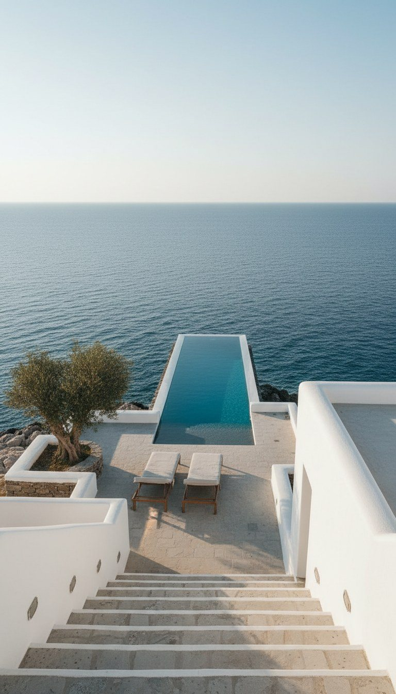

AI-generated concept home. Not a real property or product. It is not for sale or for rent. The products suggested below are real Amazon listings, chosen in the spirit of the house. The images on this page are AI-generated, not photographs of a real place.
You’re standing at the top of a narrow outdoor stair, and it drops away steeply under your feet. The walls on both sides are rough white plaster, rounded at every edge by hand. A branch of magenta bougainvillea spills over one of them. Ahead and below you, the flat white rooftops and small terraces of the house step down the hillside, one below the other.
You can’t see the sea yet. But you can feel that it’s down there, somewhere below the last white wall.
Some links on this page are Amazon affiliate links. We may earn a commission at no extra cost to you.
As an Amazon Associate I earn from qualifying purchases.
A blue door, and bougainvillea
The first stop on the way down is a door: thick whitewashed wall, deep blue painted wood, a worn brass handle, bougainvillea above it and a small olive tree in a terracotta pot beside it. The late-afternoon sun throws soft shadows across the plaster, and you can see every small imperfection in it, the marks of a hand and a trowel.
That’s what makes a Cycladic house feel alive. Nothing is perfectly straight, and nothing is meant to be.

Cool white rooms, all summer long
Inside, it’s suddenly cool. The living room is all smooth hand-plastered white, with rounded corners and a built-in plaster sofa covered in linen cushions. There is an arched niche in the wall holding a few ceramic vases, a timber-beamed ceiling laid with woven reeds, a woven rug on a pale stone floor, and one shaft of afternoon sun falling from a small, deep-set window.
Thick walls and small windows are how island houses have kept cool in the heat for centuries, long before anyone had air conditioning. It’s simple, and it’s beautiful.
A plaster niche with a few white vases is one of the quietest, most borrowable details in the house.

Jumee set of three white ceramic vases
Three hand-glazed white vases in graduated sizes, for a plaster niche or a windowsill.
View on AmazonA terrace for every hour of the day
Every level of this house has its own outdoor room, and each one catches a different part of the day. This one is small and walled: a wooden pergola casting striped shade across the floor, a built-in white bench with blue and white cushions, an olive tree in a big clay pot, and a little table with a carafe of water and a bowl of lemons. The wall is high enough to hide the view. Here, it’s just you, the shade and the sky.
Blue-and-white stripes on a white bench are the whole look in one move. Keep them under cover, though: the pair below is not made for rain.

Smile Bee navy and white striped lumbar pillow covers, 12 × 20 in, set of 2
Woven navy and cream stripes with corner tassels; the listing says they are not waterproof, so keep them under the pergola.
View on AmazonKeep going down…
A narrow passage leads on, with steps descending between two tall white walls toward a bright opening at the bottom. There’s a blue painted handrail and red geraniums in pots on the steps. The opening at the end is pure white light. You still can’t see what’s out there.
This is the trick the house plays, and the reel plays it with you. Every turn of the stair hides the view a little longer.
…and the whole sea opens up
Then you step out at the lowest level, and there it is. A long infinity pool of clear turquoise water, its far edge disappearing straight into the deep blue Aegean. White walls and steps. Two linen sun loungers, a small olive tree, the rocky coastline and the open horizon. The light is warm and late, and the water is everywhere.
It’s the kind of moment that makes you stop talking.

A thin, quick-drying Turkish cotton towel is what you’d keep folded on those loungers: light enough to carry down all those steps, and dry again before the next swim.

Wetcat Turkish cotton beach towel, 38 × 71 in
A thin, quick-drying flat-weave towel of Turkish cotton, sold in many colours.
View on AmazonEvery room, one step closer to the water
Finally the camera pulls back over the sea, and you see the whole house at once: a cascade of white cubes stacked down the rocky hillside, each with its own terrace, blue shutters, bougainvillea and olive trees, white stairs zigzagging between them, and the swim terrace at the bottom just above the water.
Seen from the sea, it looks like it grew there.
Would you live here?
We would, and we know which terrace we’d choose: the walled one with the striped shade, for the afternoon, and the swim terrace for the last hour of light.
Tell us in the comments on the reel whether you’d move in, and which of the five dream homes this week is yours.
The images on this page and the reel’s visuals and voice are AI-generated. This is a concept home, not a real property.
The products above are our suggestions in the spirit of the house; they are not items shown in the reel. Product details: each linked Amazon.com listing, loaded 23 Nov 2026 (America/Toronto).